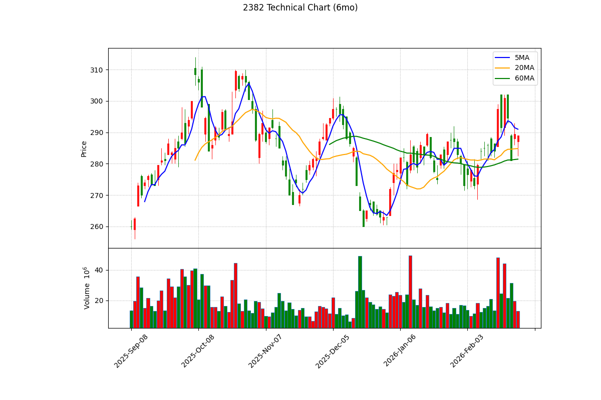

報告日期： 2026年3月6日
分析師： Peter Investment Brain (CFA Institutional Grade V8.0)
投資評級： 🟡 逢低買進 (Accumulate on Dips)
目標價： NT$ 320.0 元（基於 2026E 法人共識 EPS 20.0 元 × 合理 PE 16.0 倍）
風險等級： 中
報告基準股價：289.0 元，取自 Yahoo Finance，日期 2026/03/06 收盤價
基準股本：38.6 億股 (根據公開資訊觀測站)
廣達 (2382) 業務從傳統筆電轉向雲端伺服器。各事業群拆解如下：
| 事業群 | 營收佔比 | 主力產品 | 毛利率 (綜合 6.85%) | 成長動能 |
|---|---|---|---|---|
| 雲端伺服器 (Server) | > 50% | AI 伺服器 (GB200/H200)、通用伺服器 | 結構性低毛利 (高單價稀釋) | 四大 CSP 資本支出爆發 |
| 筆電與消費電子 (PC) | ~ 35% | MacBook、Chromebook、AI PC | 中等 | 換機潮溫和復甦 |
| 車用電子 (Automotive) | ~ 15% | Tesla ECU、車載電腦 | 較佳 | 電動車滲透率 |
為迎接 GB200 巨量訂單，廣達 2025 年的資本支出 (CapEx) 上修至驚人的 390 億台幣（YoY +35%），主要用於擴建美國廠與歐洲廠。這確保了其在高階 AI 機櫃的產能護城河，但也讓公司的資產變重。
2024 年受惠於 AI 伺服器放量，全年 EPS 達約 14.15 元。2025 年 Q3 累計 EPS 已達 11.37 元，預估全年將創下歷史新高的 17.37 元 (Trailing EPS)。
⚠️ 數據基準：摒棄市場上動輒 25 元的樂觀推估，本報告嚴格回歸 FactSet / Bloomberg 共識中位數，將 2026E EPS 預期校準為 20.0 元。
| 項目 | 2024 (歷史) | 2025 (結算估) | 2026E (法人共識中位數) |
|---|---|---|---|
| 總營收 (兆元) | ~ 1.3 | ~ 1.8 | > 2.3 兆 |
| 毛利率 | 7.8% | 6.85% (Q3) | ~ 6.5% (AI 機櫃稀釋效應) |
| EPS (元) | 14.15 | 17.37 | 20.00 |
| 指標 | 數值 | 計算公式 / 說明 |
|---|---|---|
| 淨現金 (Net Cash) | 負值 (淨負債破千億) | 現金(1523億) - 有息負債(估逾2500億)。顯示代工廠龐大的墊款與備料壓力。 |
| 流動比率 | 121.44% | Current Assets / Current Liab. (2025Q3) |
| ROE | 29.52% | 高達近 30%，顯示其利用龐大財務槓桿創造優異的股東回報。 |
⚠️ 方法論約束：禁止使用單年爆發率。使用 4 年 CAGR (2022 EPS 7.51 -> 2026E 20.0) = 27.7%。
289.0 / 20.0 = 14.45x14.45x / 27.7 = 0.52x估值張力結論：在採用嚴謹 4 年 CAGR 後，PEG 為 0.52x。這證明廣達在成長股視角中，目前的本益比依然被嚴重低估 (遠小於 1)。
廣達 2025Q3 ROE 高達 29.52%。作為一家毛利率不到 7% 的硬體代工廠，能創造近 30% 的 ROE，主要依賴極高的「總資產週轉率」與「財務槓桿」。這證明了它是真正的「組裝王者」，理應在同業中享有最高的估值溢價。
| 指標 | 廣達 (2382) | 鴻海 (2317) | 緯創 (3231) |
|---|---|---|---|
| 股價 (TWD) | 289.0 | ~ 200.0 | 130.5 |
| AI 伺服器定位 | 北美 CSP 專案龍頭 | Nvidia 官方基準夥伴 | GPU 基板主力 |
| Forward PE | 14.45x | ~ 13.0x | 10.3x |
伺服器代工是標準的一次性硬體銷售 (Project-based)。但由於 AI 晶片架構極度複雜 (如液冷散熱設計)，一旦 CSP 選定廣達作為設計與組裝夥伴，後續數年的世代交替極難轉換供應商，形成強大的「轉換成本」護城河。
我們回溯廣達過去的歷史本益比：
| 年份 | 年均價 (元) | EPS (元) | 平均 P/E |
|---|---|---|---|
| 2021 | 86.7 | 8.73 | 9.9x |
| 2022 | 79.4 | 7.51 | 10.6x |
| 2023 | 152.0 | 10.29 | 14.8x |
| 2024 | 265.0 | 14.15 | 18.7x |
| 2025 | 310.0 | 17.37 | 17.8x |
評價：廣達在 AI 狂潮下，估值已從過去的 10x 發生 Re-rating 提升至 15x-20x 區間。目前 Forward PE 14.45x 位於新常態的下緣。若給予合理本益比 16.0 倍，目標價可上看 320.0 元。
由於伺服器代工廠需承擔極端龐大的存貨墊款與建廠支出，導致 FCF 長期波動劇烈甚至為負，故捨棄 DCF，改採 EV/EBITDA 進行估值：
1.21 兆 / 1000 億 = 12.1x估值結論：EV/EBITDA 僅 12.1 倍。對比軟體業動輒 30 倍，此估值精準反映了「硬體製造業的極限」。但在硬體同業中，廣達的估值溢價（優於二線廠的 8x-10x）是合理的，這來自其無可取代的 GB200 壟斷地位。

yfinance 歷史報價與 mplfinance 繪製。藍線:5MA, 橘線:20MA, 綠線:60MA。FinMind API 抓取 (基準日 2026-03-05)。| 情境 | 採用目標 PE | 目標價 (EPS 20.0) | 關鍵監測指標 |
|---|---|---|---|
| 🟢 轉 Bull | 18.0x | 360.0 元 | GB200 NVL72 提前大規模出貨 |
| 🟡 維持 Base | 16.0x | 320.0 元 | 月營收 YoY 穩定達標 |
| 🔴 轉 Bear | 12.0x | 240.0 元 | 北美 CSP 資本支出指引下修 |
投資評級：🟡 逢低買進 (Accumulate on Dips)
基於 V8.0 嚴謹方法論，我們的操作結論如下：
1. 估值具備防禦力 (基本面)：剔除極端 EPS 預測後，2026E 共識 EPS 20 元賦予其 14.4x 的 Forward PE，PEG 僅 0.52x。這在 AI 族群中屬於估值非常安全的標的，目標價上看 320.0 元。
2. 短線均線下彎 (技術面)：日K線跌破 5MA，MACD 綠柱放大，短期面臨 300 元整數關卡的沉重套牢壓。
3. 外資賣壓沉重 (籌碼面)：外資大賣 12 萬張，被動投信買盤無力拉抬股價。
操作建議：
長線極度看好，但短線籌碼與技術面逆風。空手者切勿追高，強烈建議等待股價回測 季線 (285 元) 甚至 半年線 (270 元) 尋求支撐後，再行建立部位。